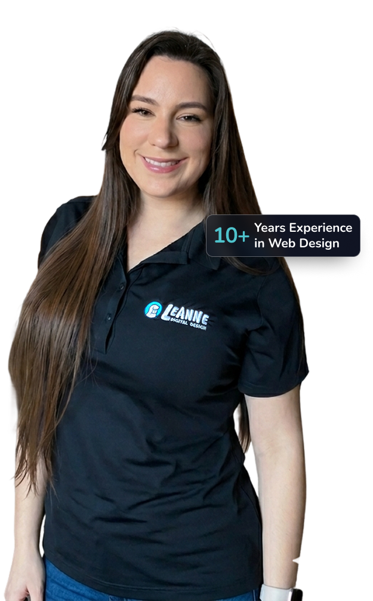

Winnipeg Website Design Built for Growth & Visibility
A beautiful website is great. But if nobody finds it on Google, if visitors feel confused, or if people leave without contacting you, it is not doing its job.
At Leanne Digital, we bring together Winnipeg website design, WordPress expertise, SEO, branding, and strategy to create websites that help businesses build trust, connect with customers, and grow online.
Because your website should do more than just sit online. It should clearly explain what you do, reflect the quality of your business, help customers find you, and guide people toward taking action. And yes, it should look really good too.

We believe businesses should not have to choose between a beautiful website and one that actually performs.
Too often, we see websites that look amazing but are slow, hard to use, confusing, and never get found online.
Or the opposite
A website that is technically optimized for Google but feels generic, overwhelming, or
disconnected from the business behind it.
We believe you deserve both.
Why Most Websites Don't Work
We see it all the time. A business invests in a website, launches it, and then wonders why nobody is contacting them. Usually, it is not because the business is bad. It is because the website is not doing its job.
One of the biggest issues we see with Winnipeg website design is businesses ending up with websites that are either built without strategy or built entirely around trends. Here are some of the biggest problems we notice:
- 01
Slow Load Times
Nobody likes waiting. If your website feels slow, visitors leave. First impressions happen fast online, and speed matters more than most people realize.
A slow website can affect trust, user experience, conversions, and even SEO performance.
- 02
Weak or Confusing Messaging
- Who you are
- What you do
- Who you help
- Why it matters
- What they should do next
- 03
Poor Navigation & User Experience
If people cannot figure out where to go, they are gone. Your website should feel easy to navigate and intuitive to use.
We think carefully about structure, layout, flow, and hierarchy so visitors can quickly find what they are looking for without frustration.
- 04
The Hero Section Isn't Working Hard Enough
The hero section (that big top section of your website) matters more than most businesses realize. People form an impression of your business within seconds.
If your website does not quickly grab attention, communicate value, and guide someone toward the next step, you are losing opportunities. Clear headlines, thoughtful visuals, strong calls to action, and intentional messaging matter.
- 05
Generic Templates & Too Much Stock Photography
This one might sound a little
opinionated, but we care deeply about this. Too many businesses end up with websites filled with generic templates and stock photography that feels disconnected from who they actually are.
Your website should feel personal, aligned with your business, and representative of the quality of what you offer. People build trust through connection. And connection comes from showing up clearly and consistently
- 06
No Clear Calls to Action
A common problem we see is websites that never actually tell visitors what to do next. Someone lands on a website, scrolls for a few seconds, and leaves because there is no clear direction.
Your website should guide people. Whether it is booking a call, requesting a quote, shopping, or learning more, we use thoughtful calls to action to help visitors take the next step naturally and confidently.
Why Winnipeg Businesses Choose Leanne Digital for Web Design

We Combine Branding, SEO, and Web Design
Your customers do not separate your website, branding, and SEO into different categories. They simply experience your business.
That means your website design, visuals, messaging, SEO strategy, and overall brand experience should feel aligned. When businesses show up consistently online, trust grows. And trust leads to more inquiries, stronger brand recognition, and better conversions.
We bring these pieces together intentionally so your website works as a whole, not just as a collection of pages.
We Design for Real Humans (Not Just Search Engines)
SEO matters. A lot. But SEO alone does not grow a business. If someone lands on your website and cannot quickly understand what you do, why they should care, or what they should do next, they leave.
We design websites that speak clearly to your audience, guide visitors naturally, and make taking action feel easy. That means:
- Clear messaging
- Strategic calls to action
- Better usability
- Thoughtful page structure
- Conversion-focused layouts
- SEO-friendly foundations
Because what is the point of a website if nobody sees it? And what is the point of getting traffic if nobody converts?
Why We Use WordPress

We specialize in WordPress website design in Winnipeg because it gives businesses flexibility, ownership, reliability, and room to grow.
WordPress powers a huge portion of the internet for a reason.
It is reliable, customizable, SEO-friendly, and not going anywhere.
Unlike restrictive website builders that can box businesses in, WordPress gives us the freedom to create a website built around your business rather than forcing your business into a template.
We use WordPress because it allows us to create:
- Fast-loading websites
- Fully custom designs
- Better SEO structure
- Flexible growth over time
- Easy-to-update content
- SEO-friendly foundations
- Ecommerce integrations
- Scalable websites built for long-term success
And once your website launches, you are not left figuring things out on your own.
We provide support, training, and guidance so you feel confident managing your website moving forward.
Website Design & Support Services in Winnipeg
Custom Website Design
Need something fully custom? We design strategic WordPress websites built around your goals, audience, messaging, and brand.
Whether you are redesigning an outdated website or launching something brand new, we create websites that feel professional, easy to navigate, and built to convert.
Landing Pages
Launching a service? Running ads? Promoting an offer? Landing pages are designed with one goal in mind: helping people take action.
We build strategic landing pages focused on messaging, calls to action, and conversions.
One Page Websites
Need to get online quickly? Our
one-page websites are perfect for businesses needing a simple but professional online presence without investing in a larger build right away.
They are designed strategically and built so they can grow with your business later.
WordPress Maintenance & Security
Websites need maintenance. We
help keep WordPress websites healthy through updates, backups, monitoring, troubleshooting, and security support.
Because broken websites are stressful. And they cost businesses opportunities.
Website Hosting
Email Setup & Configuration
Need help with professional
business email, Google Workspace, DNS, or email setup? We help configure the technical side of things so everything works properly and feels less overwhelming.
Ongoing SEO Support
- Keyword strategy
- On-page SEO improvements
- Blog optimization
- Local SEO
- Technical SEO monitoring
- Internal linking strategies
- AI search visibility optimization
Website Support & Troubleshooting
Sometimes websites break. Plugins conflict. Forms stop working. Things slow down.
We help businesses troubleshoot website problems and get things running smoothly again without the stress.
Ecommerce Integration
Want to sell online? We help businesses integrate ecommerce solutions into WordPress websites so selling products, services, or bookings feels seamless and easy to manage.
Our Website Design Process
Building a website should feel exciting, not overwhelming. One of the things clients often tell us after working together is how supported and stress-free the process felt.
We believe great websites happen when there is collaboration, strategy, and a clear plan. That is why we follow a thoughtful, step-by-step process designed to keep things organized, transparent, and focused on results.

Discovery & Strategy
Every project starts with a conversation. We take time to understand your business,
goals, audience, challenges, and what success actually looks like for your website.
Who are you trying to reach? What do you want visitors to do? What is currently
working and what is not?
We also look at competitors, messaging opportunities, SEO foundations, and website
goals so strategy is guiding decisions from the start.
Design Comes First
This is one of the biggest things that makes our process different. We do not jump
straight into development. Before we build anything, we design it first.
Think of it like building a house. You would not start construction without blueprints.
Your website design acts as the blueprint. This stage helps us plan:
- Messaging and hierarchy
- Calls to action
- User experience and navigation
- Branding consistency
- Content structure
- Layout and usability
Development & Technical Setup
Once the design is approved, we move into development. This is where strategy becomes reality.
Your website is built with responsiveness, performance, usability, SEO foundations, and clean structure in mind. We carefully test layouts, functionality, responsiveness, forms, and user experience so everything feels polished and works properly.
Launch, Support & Growth
Launching your website is not the end. It is the beginning.
We are here to support you after launch with training, website support, SEO,
troubleshooting, hosting, updates, and growth-focused improvements. Because a
website should evolve alongside your business.
The Best of Both Worlds: Strategy + Technical Expertise
One of the things that makes Leanne Digital different is that you are not just getting a designer.
You are getting the best of both worlds.
With over 10 years of experience in graphic design, website design, UX, and digital marketing, I bring a strategic and creative perspective to every website we build.
I have worked both in-house and at a digital marketing agency, which means I have seen what works, what does not, and how businesses actually use websites to grow.
I graduated from both the Graphic Design and Digital Multimedia Design programs at Red River College, and over the years I have developed a strong understanding of messaging, branding, user experience, digital marketing, and conversion-focused design.
I care deeply about making sure websites feel clear, trustworthy, beautiful, and aligned with the businesses behind them.
But behind every great website is strong technical execution too.
That is where our CTO and developer partner, Gary Burns, comes in.
Gary brings deep technical expertise in WordPress development, website performance, hosting, DNS, email configuration, security, troubleshooting, technical SEO, server setup, migrations, and all the behind-the-scenes systems that make websites run smoothly.

CEO | Strategy & design — Leanne Jones
I focus on strategy, messaging, branding, user experience, design, and making sure your website speaks clearly to your audience.

CTO & development — Gary Burns
This combination matters.
Because one of the biggest problems we see in web design is businesses being forced to choose between two extremes.
A designer builds a beautiful website that nobody ever finds online.
Or a developer builds something technically functional that works behind the scenes but feels cold, generic, or disconnected from the business.
We believe you should not have to choose.
You deserve a website that looks professional, loads quickly, feels aligned with your brand, is easy to navigate, and has the technical structure to help people actually find it online.
That is the difference thoughtful strategy and technical expertise make when they work together.
Proudly Indigenous-Owned & Operated

- Indigenous Owned
- Treaty 1 Territory
Leanne Digital is a proudly Indigenous-owned business based in Winnipeg, Manitoba.
As a member of Peguis First Nation and certified Indigenous business owner, supporting Indigenous businesses, organizations, and communities is deeply personal to me. I understand the importance of storytelling, authenticity, trust, and building meaningful relationships because this is lived experience, not something I approach from the outside.
We have had the privilege of supporting Indigenous entrepreneurs, businesses, organizations, and communities while helping bring ideas, services, and stories online in ways that feel thoughtful, professional, and aligned with who they are.
Whether we are working with Indigenous organizations, local businesses, or growing brands, our goal is always the same: to create websites that feel trustworthy, meaningful, and genuinely reflective of the people behind them.
Frequently Asked Questions for Winnipeg Website Design
How much does a website cost?
This is the question everyone wants to know.
And honestly, website pricing can feel a little confusing. It is a bit of the wild west out there. You might get one quote for a few hundred dollars and another for several thousand, leaving you wondering what the actual difference is.
The reality is that website pricing depends on goals, functionality, number of pages, ecommerce needs, SEO, integrations, and the strategy involved.
To give you a general idea, our custom websites typically start at $3,500 CAD, while an average 5-page custom WordPress website generally falls between $5,000–$8,500 CAD depending on scope and complexity.
Whether you need a one-page website, landing page, fully custom website, ecommerce functionality, or ongoing SEO support, we’ll help recommend the best fit for your goals and budget.
Why do you use WordPress?
We love WordPress because it gives businesses flexibility, ownership, customization, and room to grow.
It powers a huge portion of the internet for good reason.
It is reliable, scalable, SEO-friendly, and allows us to create custom websites without unnecessary limitations.
Most importantly, it grows with your business.
Will my website be SEO-friendly?
Yes.
SEO is considered from the start, not added later.
We build websites with strong technical foundations, thoughtful heading structure, keyword considerations, usability, speed, mobile responsiveness, internal linking opportunities, and search-friendly best practices.
Because what is the point of a website if nobody sees it?
Can I update my website myself?
Absolutely.
We want you to feel confident using your website.
After launch, we provide training and support so you can make updates, swap images, change text, publish blogs, and manage content when needed.
And if you would rather we handle updates for you, we can help with that too.
How long does it take to build a website?
It depends on the size and complexity of the project.
Smaller websites and landing pages typically move faster, while larger custom WordPress websites may take more time depending on content, revisions, and functionality. For a standard website project, timelines are usually around 1 to 2 months from strategy and design through development and launch.
We will always communicate timelines clearly so you know what to expect and feel supported throughout the process.
Do you only work with Winnipeg businesses?
Ready to get started?
Tell us what you are building and we will help you figure out the best next step.